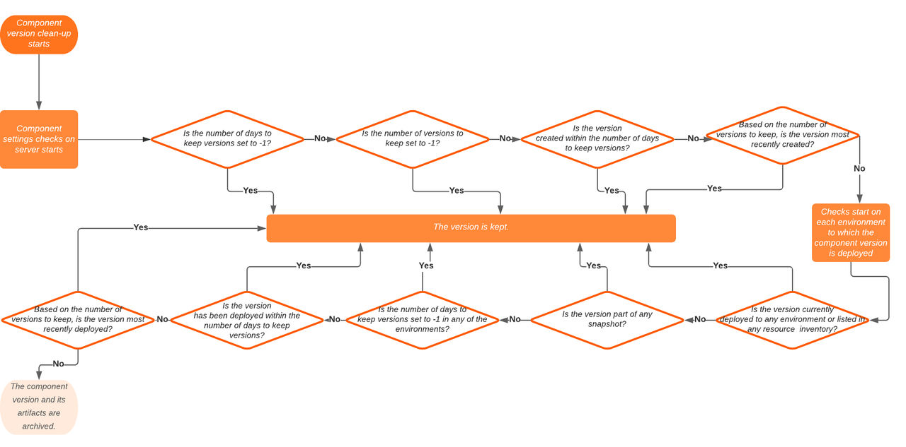
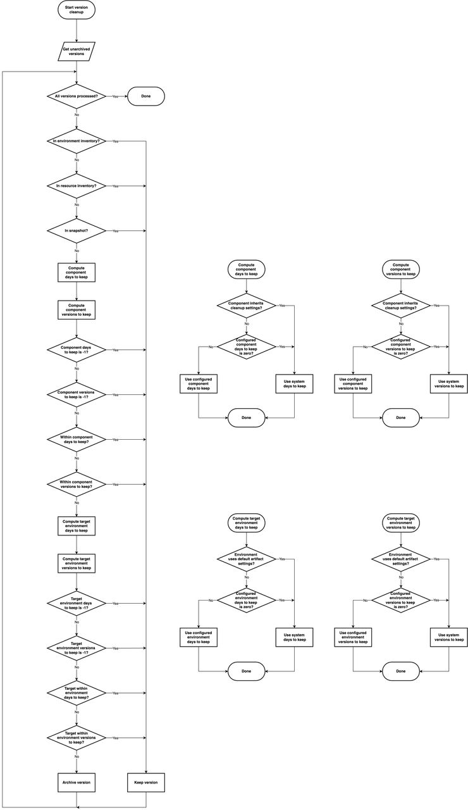

Cleaning up component versions
You can configure the server to reduce the number of component versions by archiving them. You can specify artifacts cleanup settings from the System Settings, or cleanup settings for individual components, and environments.
About this task
These settings include a number of days for which to retain versions and a number of versions to keep. The system default component settings, and the component settings refer to the creation date of the version. For example, if the system default settings or component settings keep versions for 30 days, a version is not archived until its creation date is more than 30 days in the past. Similarly, if the system default settings or component settings keep the 10 most recent versions, a version is not archived until there are 10 more recently created versions. Component settings override system default settings for that component.
By contrast, the environment settings refer to the most recent deployment date of the version. For example, if the environment settings keep versions for 30 days, a version is not archived if it has been deployed in the last 30 days. If an environment does not have settings, the server uses the system settings instead. For example, if the server settings keep versions for 30 days and the version was created more than 30 days ago but was deployed to an environment within 30 days, the version is kept.
The server uses the following criteria to determine which versions to keep and which to archive:
- If the number of days to keep versions is set to -1, the version is kept.
- If the number of versions to keep is set to -1, the version is kept.
- If the version was created within the number of days to keep versions, it is kept.
- Based on the number of versions to keep, if the version is in the most recently created versions, it is kept.
- If the version is currently deployed to any environment or is listed in the inventory of any resource, it is kept.
- If the version is part of any snapshot, it is kept.
- If the number of days to keep versions is set to -1 in any of the environments, the version is kept.
- If the number of versions to keep is set to -1 in any of the environments, the version is kept.
- If the version has been deployed within the number of days to keep versions, it is kept.
- Based on the number of versions to keep, if the version is in the most recently deployed versions, it is kept.
If none of these criteria are true, the component version and the artifacts in it are archived, even if the version was deployed to an environment in the past.
The following diagram is a graphical representation of the checks performed on the server for the clean-up of component versions.

- The server stores full copies of each file in each component version, even if the files are duplicates.
- When you perform an artifact cleanup, upcoming or scheduled processes are not taken into consideration. You must be aware that the artifact cleanup removes all versions according to the schedule, regardless of the versions that might be used in upcoming scheduled deployments. Schedule artifact cleanups with upcoming deployments in the timing to avoid deployment problems.
This additional flowchart provides a more comprehensive view of the cleanup, showing the cleanup steps in detail.
